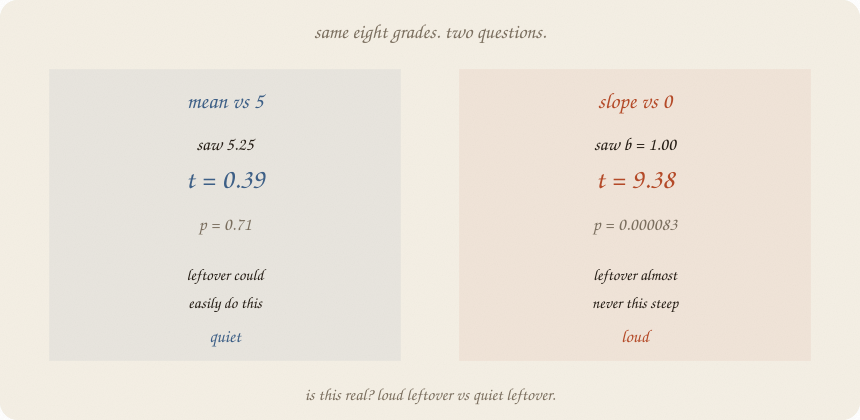
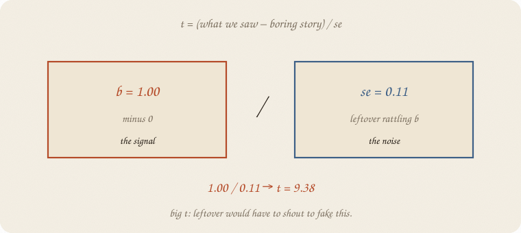
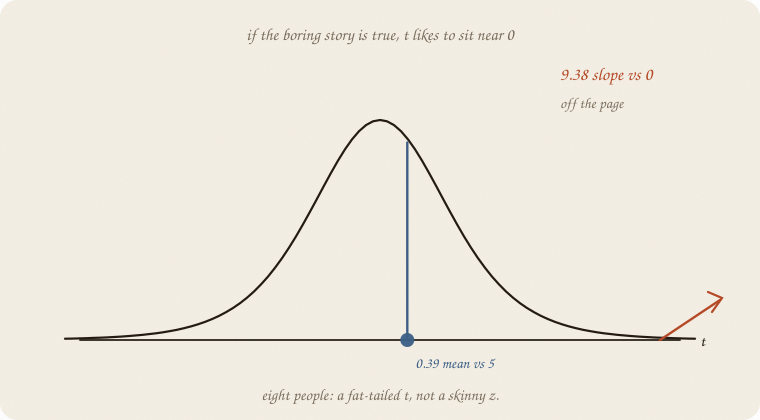
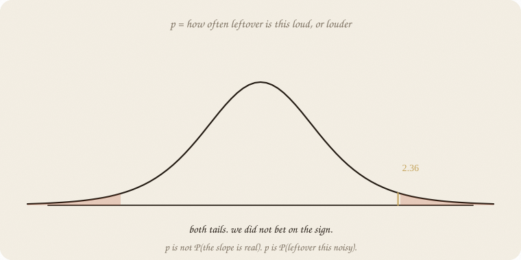
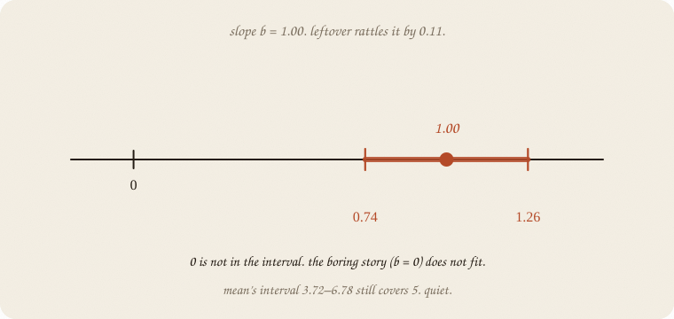
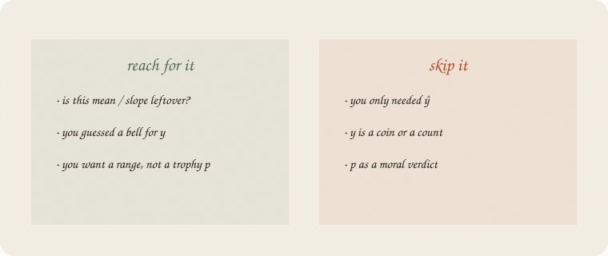

datazines · a sketchbook

Read 01 distributions first, and the eight grades on 01 linear regression. Same people. Same line ŷ = 1.75 + 1 · hours. The new question is not ŷ. It is is this real?
This is 01 of the inference wing. Bootstrap, A/B, “how sure is b?” live here. Cause is a later wing.
Flip it like a notebook. One page = one idea. Done.
Eight grades. Mean 5.25. Slope b = 1.
Question A: is the mean different from 5 — a boring “about average” story?
Question B: is the slope different from 0 — a boring “hours do nothing” story?
Same leftover costume: a bell (01 distributions). Same eight dots. The answers will not match. That is the point of the notebook.
You saw a number. Leftover rattles every number. Divide:
$$t = \frac{\text{what we saw} − \text{boring story}}{\text{se}}$$
se is how much leftover usually shoves that number. Mean: se = sd / √n. Slope: a similar rattle, from the leftovers of the line.

Mean vs 5: (5.25 − 5) / 0.65 → t = 0.39. Tiny.
Slope vs 0: 1.00 / 0.11 → t = 9.38. Huge.
People call se the standard error. Not the leftover’s sd. The leftover’s sd for this knob, after eight people.
Draw leftover’s favorite ts. A bell, a bit fatter than a z because eight people is not infinity. z is the same ratio when you already know σ and n is huge. Here you guess σ from the eight — so the tail is fatter. That extra fat is t.
Degrees of freedom = leftovers you still own after you spent knobs. Mean: you spent ȳ, so n − 1 = 7. Slope: you spent a and b, so n − 2 = 6. Spend more knobs, fatter t, louder leftover needed to look “real.”

0.39 sits in the fat middle. Leftover does this all day.
9.38 is off the page. If hours did nothing, leftover almost never draws a line this steep.
The costume still matters. Coin y is not this bell. Counts are not this bell. Wrong costume → smug t.
p = how often leftover is this loud, or louder, if the boring story is true. Both tails: we did not bet on the sign.

Mean vs 5: p = 0.71. Leftover this quiet is ordinary.
Slope vs 0: p = 8.3×10⁻⁵. Leftover this loud is a freak — if hours truly did nothing, and the bell is honest.
p is not P(the slope is real). p is P(leftover this noisy | boring story). Flip that in your head and you get a religion. Keep the definition.
0.05 is a habit, not a law. Same politics as logistic’s 0.5 cut.
A confidence interval is the set of boring stories leftover still fits.
Slope: 1.00 ± (2.45 × 0.11) → 0.74 to 1.26. Zero is not in it. Hours-do-nothing does not fit.
Mean: 5.25 ± (2.36 × 0.65) → 3.72 to 6.78. Five is in it. About-average still fits.

Same leftover, two knobs. The interval is the picture you can screenshot. p is a tail of that picture.
Light vs heavy study (hours ≤ 3 vs ≥ 4): means 3.75 vs 6.75, t = 4.43, p = 0.004. A two-sample cousin. Same ratio. You split the class; you did not invent a new test.
If the two piles have different spread, do not pretend they share σ. People call the fix Welch. Same t idea, a messier df. Ranks instead of a bell (Mann–Whitney) is a later camera — this notebook stays on the costume you guessed.
If you keep only one thing:
t is signal over leftover-rattle. p is how often leftover shouts that loud.
Same table as linear regression. Mean vs 5, slope vs 0, and the two groups. No extra story.
import numpy as np
from scipy import stats
hours = np.array([1, 2, 2, 3, 4, 5, 5, 6], float)
grade = np.array([3, 4, 3, 5, 6, 7, 6, 8], float)
mean = grade.mean()
se_mean = grade.std(ddof=1) / np.sqrt(len(grade))
t5, p5 = stats.ttest_1samp(grade, 5.0)
lr = stats.linregress(hours, grade)
tcrit_m = stats.t.ppf(0.975, 7)
tcrit_b = stats.t.ppf(0.975, 6)
light = grade[hours <= 3]
heavy = grade[hours >= 4]
t2, p2 = stats.ttest_ind(heavy, light)
print("n", len(grade), " mean", round(mean, 2), " sd", round(grade.std(ddof=1), 2), " se", round(se_mean, 2))
print("H0 mean=5 t", round(t5, 2), " p", round(p5, 2))
print("95% CI mean", round(mean - tcrit_m * se_mean, 2), round(mean + tcrit_m * se_mean, 2))
print("slope b", round(lr.slope, 2), " se", round(lr.stderr, 2),
" t", round(lr.slope / lr.stderr, 2), " p", f"{lr.pvalue:.1e}")
print("95% CI slope", round(lr.slope - tcrit_b * lr.stderr, 2),
round(lr.slope + tcrit_b * lr.stderr, 2))
print("light/heavy means", round(light.mean(), 2), round(heavy.mean(), 2),
" t", round(t2, 2), " p", round(p2, 3))
n 8 mean 5.25 sd 1.83 se 0.65
H0 mean=5 t 0.39 p 0.71
95% CI mean 3.72 6.78
slope b 1.0 se 0.11 t 9.38 p 8.3e-05
95% CI slope 0.74 1.26
light/heavy means 3.75 6.75 t 4.43 p 0.004
Mean vs 5: leftover shrugs (p = 0.71; 5 sits in 3.72–6.78). Slope vs 0: leftover would have to scream (t = 9.38; 0 is outside 0.74–1.26). Light vs heavy is the same verb on two piles.
ttest_1samp is question A. linregress already prints the slope’s t and p. ddof=1 is the honest sd (n − 1 leftover after the mean). Fake a smaller se and t gets louder — don’t. ttest_ind(..., equal_var=True) is the shared-σ cousin; Welch is equal_var=False.
| word | meaning |
|---|---|
| boring story / H0 | the number leftover is asked to fake |
| se | leftover’s rattle for this knob |
| t | (saw − boring) / se |
| df | leftovers you still own (mean: n−1; slope: n−2) |
| z | same ratio when σ is known and n is huge |
| Welch | two piles, don’t share σ |
| p | tail: leftover this loud or louder |
| CI | boring numbers leftover still fits |

Reach for it when you ask whether a mean or slope could be leftover, you guessed a bell for y, and you want a range, not a trophy p.
Skip it when you only needed ŷ (01 linear regression); y is a coin or a count (01 logistic regression / 06 GLM — different tests); you wanted p as a moral verdict.
Pays you: the chance wing’s first test. Same leftover as the line, now used as a judge. Interval and t are twins.
Costs you: the bell is a guess. Eight people make a fat t. p is not P(true). Pattern of leftover, not cause (that wing is later).
Inference 01. Same eight grades, now with a judge. The pile without a bell: 02 bootstrap. The fork: 01 confounding. Chance costume still: 01 distributions.
Flip it like a notebook. One page = one idea.